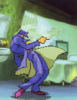
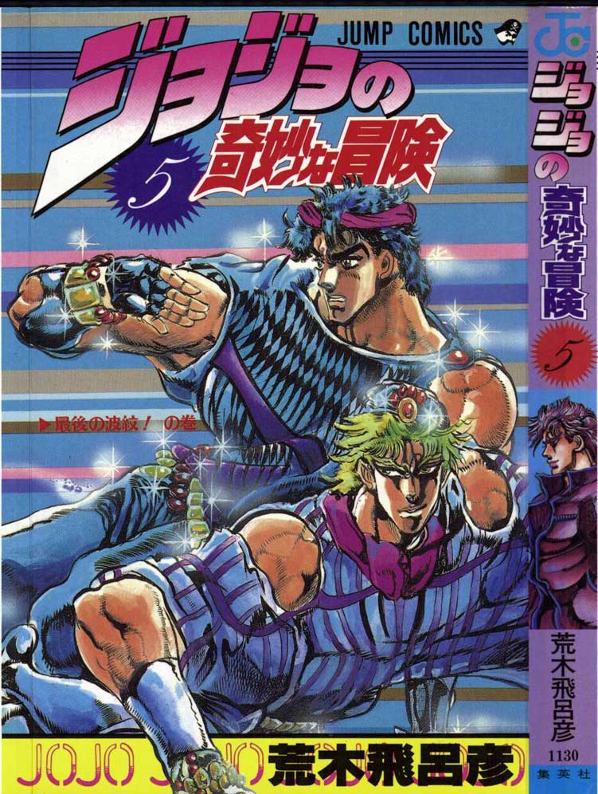
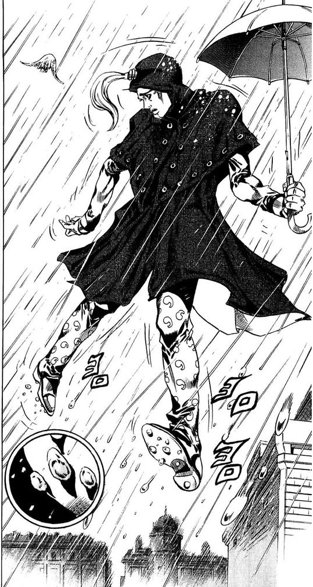
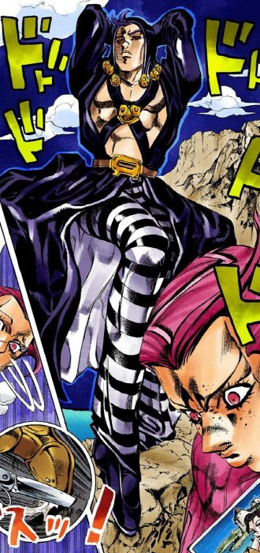
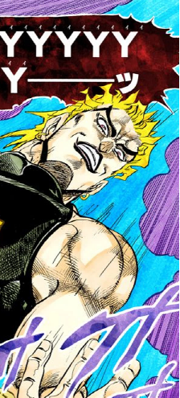
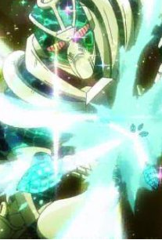
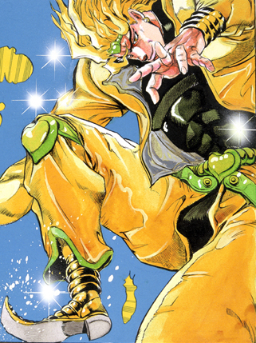
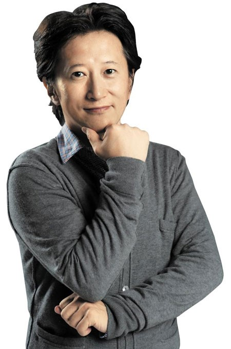

- Level 04 ~
- Level 05 ~
- Level 06 ~
- Level 07 ~
JoJo pose
난이도별 죠죠서기


1. 왼발을 앞으로 뻗는다.
2. 왼발의 뒷꿈치를 올리고
뒤로 젖힌다.
3. 허리를 젖히고 오른손으로
가리키며 구호를 말한다.
※ 구호 "야레야레다제."
close


1. 왼손의 손가락을 만든다.
※ 검지와 새끼손가락을 붙인다.
엄지손가락을 손바닥쪽으로 굽힌다.
2. 왼팔을 세우고 손목을 구부린다.
3. 오른팔을 교차시킨다.
close


죠나단
1. 얼굴은 우측을 향하고
오른손을 손바닥이 바깥 쪽을
향하게 내민다.
2. 분노한 표정을 짓는다.
디오
1. 양손을 바닥에 붙이고
팔꿈치를 구부린다.
2. 오른발을 왼발 위에 건다.
close


1. 오른손이 하늘을 향하게 비튼다.
2. 왼손의 우산은 얼굴높이
정도로 든다.
3. 오른발은 발끝을 들고
왼발은 뒷꿈치로 서서
비틀비틀거리는듯 선다.
4. 오른쪽 하단을 쳐다보며
"토호호" 하고 전력으로 웃는다.
close

1. 오른쪽 발을 앞으로 뻗는다.
2. 팔꿈치를 윗쪽으로 당겨 올린다.
3. 오른쪽 발꿈치를 든다.
4. 머리를 오른쪽 대각선 위로
치켜든다.
5. 구호를 외친다
※ 구호 "마지막이다! 먹어라!"
"메탈리카!"
close

1. 양손을 하늘을 향하게 하며
사과를 쥔 듯이 하고,
높이는 자신의 가슴높이정도로,
폭은 약 1m정도로 편하게 벌린다.
2. 양 발꿈치를 들어올린다.
3. 등을 젖힌다.
4. 구호를 외친다
※ 구호 "무다무다무다앗!"
"wryyyyy(으리이이)"
close


1. 양 손의 모양을 잡는다.
2. 왼손가락은 상대를 향하고,
오른손가락은 하늘을 향한다.
3. "에메랄드스플래쉬!" 라고 외치며
오른발을 뒤로 빼서 위로 올린다.
4. 이 자세를 필사적으로 유지한다.
close


1. 양 손가락을 마지막의
한 관절에서 구부린다.
2. 무릎을 꿇은듯한 상태에서
오른발을 올린다.
3. 상반신을 당겨올린다.
4. 사악한 미소를 짓는다.
close


죠죠시리즈의 작가.
연재 초부터 늙지 않는듯한 외모로
흡혈귀나 파문전사, 완전생물이라는
별명도 있다.
※ 죠죠시리즈만 1987년부터
현재까지 연재중이며
1960년생으로 2018년 기준 58세다.
close
서동찬의 죠죠서기교실